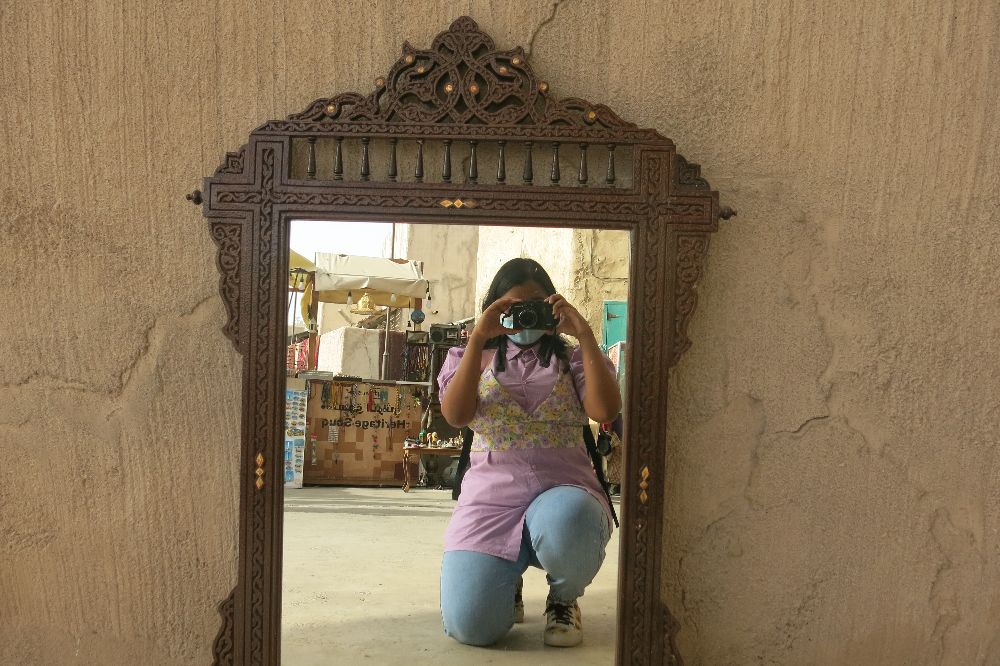

| About the Creator |
|

|
Thanks for your interest, here
is a quick story of me and this
website:
Raya Tabassum is a 20 year old sophomore year student at NYU Abu Dhabi born on 21st January, 2003.
She is majoring in Interactive Media with a minor in Computer Science. She's originally from Dhaka, Bangladesh. She loves to sing and
listen to music. She loves to watch movies and series, especially Bollywood movies. She likes to read novels of Colleen Hoover.
She loves cats and so she shot a short film with her teammates about the campus cats in NYUAD. Her dream is to work in Instagram company.
|
|